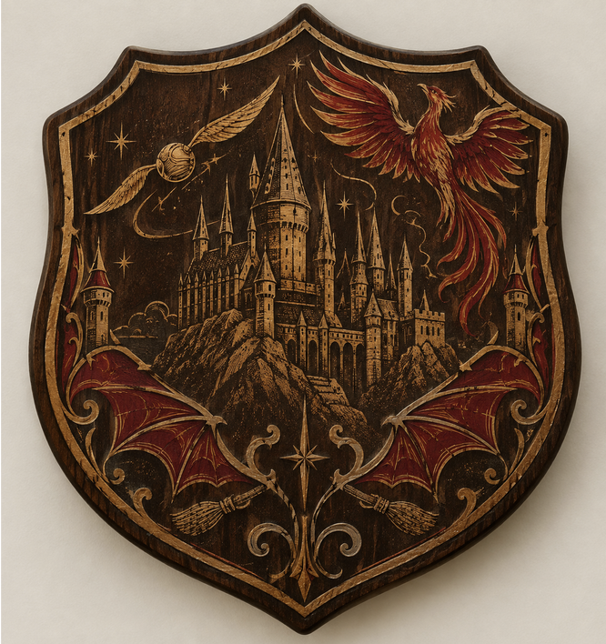

Our client was Harry Potter. We had asked Copilot to pretend they are Harry Potter and describe features of a coaster that they were like. We asked it about its preferred shape, color scheme, material, aesthetic appeal, and what illustrations they wanted. From their response we gathered that they prefer scarlet and gold, a rounded shield, wood, and are inspired by castle towers, broomsticks, and dragon wings. From there we had to use ChatGPT to create an image of those requirements which resulted in the image above.